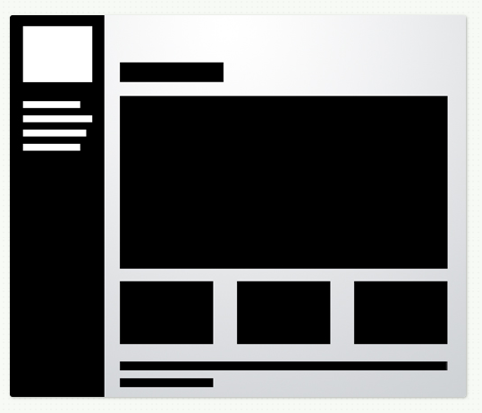
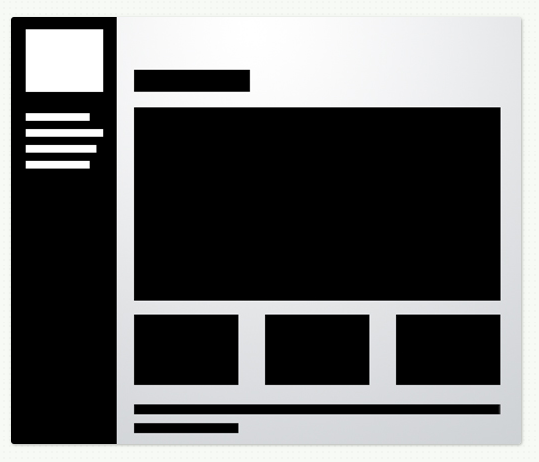
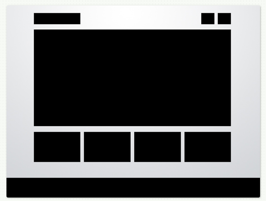
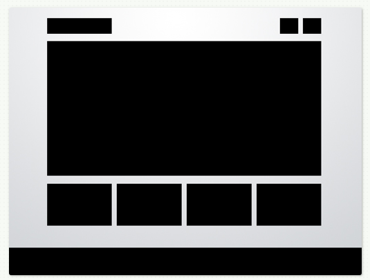
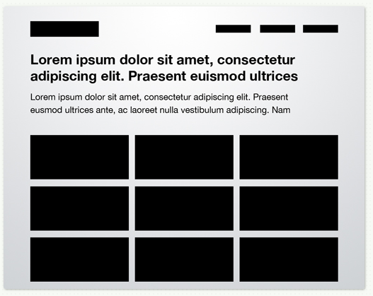
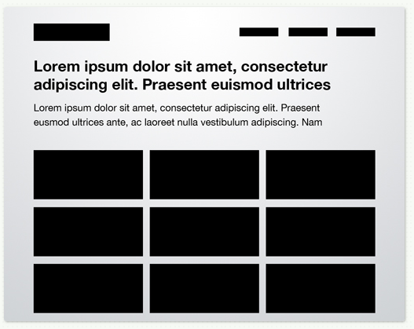
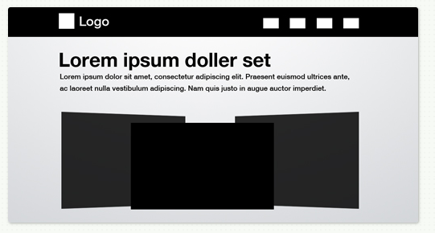
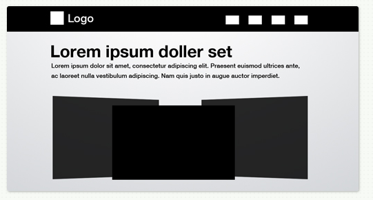

| Brand |
The page gives a professional impression with the menubar that can be hidden and the big picture in the background.
The text is easy to read and the menu is neat . The whole impression is elegant and it makes me want to
look more |
| Functionality |
The page has good functionality. You get a good overview of what the page has to offer by looking at the menu. The negative thing
is that the whole page reloads when clicking a link, which makes it slow. The menu options has a description that makes it very
clear what it will present. |
| Interactivity |
You can choose to hide the sidebar and it will move up and out of the picture smooth and fast. You can also choose to
make it become visible again.
At the music page it is possible to listen to music and at the contact page you can send in a message
to the owner of the page. |
| Navigation |
Navigation is easy, the sidebar is always visible (if you choose it to be)
and the page you are at is enlighted in the sidebar. As mentioned, when clicking the links
the new page shows what you expect it to show, which gives a good user experience. |
Stian A. Giltvedt
| Brand |
The brands of this page I would say are childish, colorful and professional. The
background is full of drawings, but it still looks neat and professional. |
| Functionality |
There is a lot of text and small windows, but the menu at the top is easy to spot and gives a good overview.
The different windows have titles so it easy to distinguish them. There is also a menubar at the bottom, which is a
secondary menu. |
| Interactivity |
The page has a movie on the front page that can be viewed. It has some filtering in the portfolio and
you can browse through the pictures on the top. |
| Navigation |
The menu at the top gives a good navigation and it is always shown. There are many links to click
at the home page, and it can be confusing to understand if the links guide you to the same places as the menu. It is
always easy to find the way back to the front page. |
| Brand |
The page is styleful, maybe because of the pictures they are presenting. The white and light colors
make it very delicate. And the over all impression is that it is professional because the page is fast and
neat.
|
| Functionality |
The page gives a fast overview of what it contains. When entering the page I would first check out the drag button
to see how good it works. At the top there is a menu and info links about the owner and how to contact them. The white screen that comes down
on the top of the front page when clicking the information is a bit inconsistent with the rest of the page |
| Interactivity |
This page lets you drag a button to the left or right to scroll through all the pictures.
The button moves to the side that you drag which gives a good experience. The page plays music, but there is no way to turn it off, which is a bad
user experience. |
| Navigation |
I like to navigate between the picture by dragging the button. It gives a feeling of control
and I don't have to wait for the next picture to load. It is easy to see all the pictures fast and getting back
to the start. When clicking the about button or the contact button a white screen come down. I find it a bit confusing
and messy and the cross at the bottom to make it go away is difficult to see. |
| Brand |
This is a highly interactive page because you can se different pictures and sizes of it when hovering over the picture.
That also makes it playful because it makes you want to test it out. It is also technical. |
| Functionality |
This page has almost no text at all. You have to search with your mouse over the big picture to see what it has.
There is a small tag at the bottom saying info, which gives you some options. It is clear that the desginer of this page
didn't want text, only pictures. When you click one of the options in the picture, a new page displays the photos.
In the photo page there is not any text either, only some signs at the bottom, one for 'return' and one for 'comment'.
The rest shows where in the photo course you are. |
| Interactivity |
The front page has an interesting interactivity. When hovering the mouse over the picture a piece of
another picture is shown and what that photo group is called. How much of the picture that is shown is decided by
where you hover the mouse, at the top, center or bottom. |
| Navigation |
It is not obvious how to navigate at this page at the start because the design is very minimalistic.
You need to try out what the different links and buttons do. When you are looking at the pictures it is not easy to
find the return button. There is only
The design is very minimalistic |
| Brand |
This is a straightforward page that gives a good overview in a short time.
The page is neat, there are only bars in the same size in a stack with different pictures in them and
that also makes the page look pretty |
| Functionality |
This page is very straightforward and with just a blink you get all the information of this site that you need.
This page only shows pictures and have some cantact information, and it is all easy to find. |
| Interactivity |
When it comes to interactivity, it is not a lot. You can browse through the pictures and they sort of fades in in a nice way. |
| Navigation |
Navigation is easy. You can alway go back to the front page by clicking the icon/name on the top. Browsing through the
pictures are easy, an arrow in both ways indicates that you can go forward or backwards. It is als possible to click
at the left side of the photo to go back and on the right side of the photo to go forward. This is a good effect
that gives the feeling of control. |
| Brand |
The page is playful and creative because it is different than many other portfolios.
When hovering over with the mouse different things happens. It is a technical page beacuse of all the interactivity and animations. |
| Functionality |
It is not easy to see what the site contains, you have to search with the mouse to find out.
I like the idea and this site, but it can be difficult to find what your are looking for.
After some exploring I understood that the menu at the bottom is the same as in the picture.
This makes it easier to find what your are looking for, but it is not immediately clear that these are the same menus. |
| Interactivity |
This page has a lot of interactivity. The page plays some sounds when opening it.
When hovering the mouse over the picture, parts of the picture turns into color clearly indicating
that they are in the same group and a menu title pops up. The page also has videos that starts when clicking the links.
When you click the links there are also a lot of movements and colors before the new page shows. The animations are
elegant and fast so you don't have to wait long for the new page to be diaplayed. Also the page doesn't reload when clicing a link,
only the content in the window changes, which gives a smooth and comfortable experience. |
| Navigation |
I have talk a bit of the navigation already. The colors and the red ring around the menu options shows clearly what you can click on.
The home button works as a return button, and it is always shown along with the menu bar at the bottom. Every page has a movie
and some links you can click that shows pictures realted to the movie. A red ring shows which link that is showing and a headline
in the top left shows which page is displayed. It makes it easy to navigate and is not confusing. I like this page more ane more
after exploring it. |
 

 

 

 
